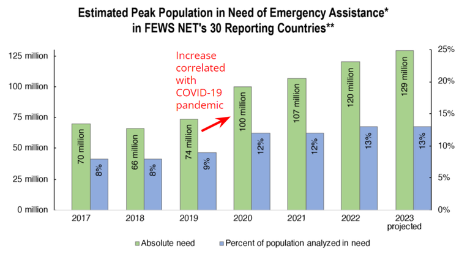

FEWS NET Taking “One Health” Approach to Assessing Climate-Sensitive Threats to Food Security, Human Well-Being
The COVID-19 pandemic — coming after HIV, SARS, Ebola and other deadly diseases that have spread across national boundaries — is only the latest stark reminder of the speed at which infectious diseases can develop, travel and mutate, facilitated by a changing climate and massive losses of Earth’s biodiversity.

Increase in estimated peak populations in need of emergency food assistance correlated with the outbreak of COVID-19 in 2020 across FEWS NET-monitored countries. Image Credit: FEWS NET.
The devastating toll that COVID-19 has taken on people’s health, and on the functioning of economies, has raised global awareness of the important role the climate and environment play in the emergence and spread of infectious diseases, and the impacts they can have on human well-being, including food security.
“Climate change exacerbates health risks worldwide,” USAID/FEWS NET One Health and livestock advisor Dr. Shaina Craige explained. “Many health threats, including infectious diseases, are climate-sensitive. Factors such as urbanization, changes in disease control and human mobility all play roles in spreading infectious diseases. This, in turn, can prompt policies that negatively impact trade and curtail access to food and essential agricultural inputs like seeds and fertilizer. These kinds of dynamics can tip already vulnerable communities into a state of acute, or emergency, food insecurity.”
Given the potential for infectious disease, of humans as well as animals, to drive large-scale food insecurity — and recognizing the important role that infectious disease early warning can play in supporting programmatic decisions for both health and food security responses — FEWS NET has initiated a pilot effort to incorporate early warning for climate- and environment-sensitive infectious diseases into its operational workstreams.
The pilot, called the FEWS NET Health Threat Extension (HTE), takes a One Health approach to characterizing risk factors for disease spread that will allow FEWS NET to provide early warning of infectious disease in countries at high risk of acute food insecurity.
“One Health is an integrated, unifying approach to balance and optimize the health of people, animals and the environment,” according to the World Health Organization. “The approach mobilizes multiple sectors, disciplines and communities at varying levels of society to work together. This way, new and better ideas are developed that address root causes and create long-term, sustainable solutions.”
Teams from across USAID — including the Bureau for Africa; the Bureau for Resilience and Food Security; the Bureau for Humanitarian Assistance; and USAID’s Somalia Mission — are collaborating with other federal agencies and local partners, such as the National Oceanic and Atmospheric Administration and the United States Geological Survey, to initiate an HTE pilot activity in Somalia that seeks to harness socioeconomic-, epidemiological-, climatological- and biodiversity-related data to provide early warning of disease emergence and spread among populations at high risk of acute food insecurity.
In Somalia, FEWS NET analyses have been central to guiding responses to food crises driven by drought and conflict over the last decade. In 2022, a Famine Review Report indicated an increased risk of cholera and measles as a result of low vaccination rates and inadequate water, sanitation and hygiene (WASH) services, particularly in densely populated internally displaced persons (IDP) camps.
Following this report, an uptick in humanitarian food assistance helped to avert an official famine. However, as a record-breaking series of droughts pushed more people into Somalia’s IDP camps, increased rates of measles led to significant loss of life.
“Future climate predictions show that climatic events, such as drought, will likely be more extreme, prolonged and intense, making an overwhelming case for the need to understand better, prevent, prepare for and give early warning of the emergence and spread of health threats,” Craige said.
Through the HTE pilot activity, FEWS NET aims to strengthen the collection of epidemiological-, climate- and weather-related data to identify where and when to invest in future vaccination efforts in Somalia, beginning with measles.
“USAID/Somalia is working with the Federal Ministry of Health, other ministries and stakeholders to generate animal and human data and information to help Somalia forecast health threats to plan and prepare — based on evidence — to prevent food and water insecurity and other development challenges,” USAID’s Somalia Mission said in a statement.
FEWS NET hopes to expand the HTE activity to other countries, leveraging its long-term investments in climate science — originally used to provide early warning of below-average agricultural production — for early warning of health threats as well.
“Food crises and health crises both emerge from a confluence of risk factors — adverse climate and environmental conditions, below-average agricultural production, conflict and governance challenges, economic shocks, spread of infectious disease, and more. These are complex, multisectoral problems that require people of diverse backgrounds and types of expertise coming together with a determination to help solve them,” FEWS NET team leader Kiersten Johnson said. “Working hand-in-hand with partners in the Government of Somalia and from across the U.S. government, we are in a good position to make headway toward our objective of delivering early warning of these crises, and our goal of saving lives.”
This story was originally posted on Agrilinks.org on August 9, 2023.